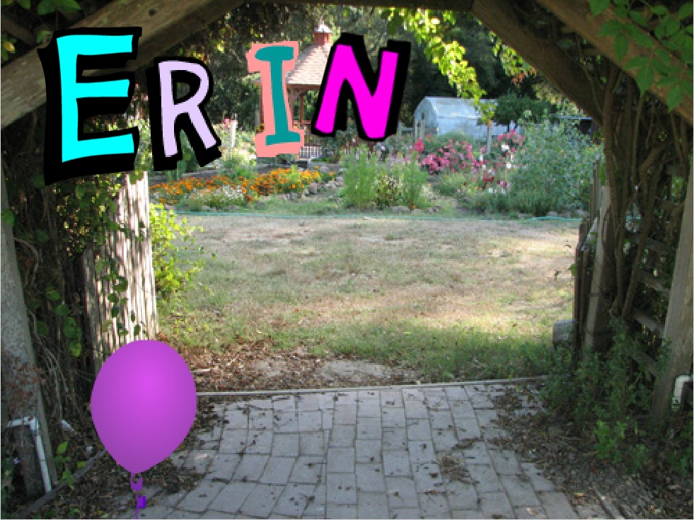
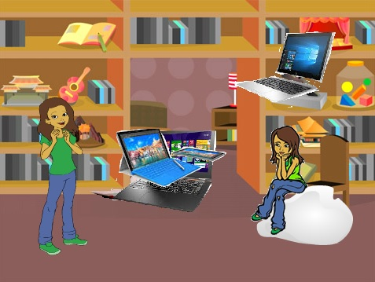
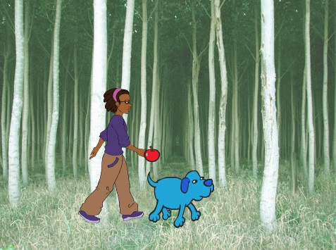

Name Assignment

Description:
We had to use scratch to have our name animated. We had to use sprites as the letters of our name with three unique animations per sprite. When the green flag was clicked, everything was supposed to start and when the green flag was clicked again, everything should have reset to the beginning.
Concepts Learned:
- Using event blocks: when green flag is clicked, when key is pressed
- Conditional statements: I used an if statement to get the sprite to turn 20 degrees when the up arrow key was pressed
- Used loops: I used a forever block to put my if statement into
- Sprites: I created 5 sprites using the sprites editor and the library of sprites to find the specific letters of my name
- Looks: I used the looks scripts so have my letters change size and change ghost effect
- Motion: I used the motion scripts to turn my sprites back and forth from their original location
Computer Buying Project

Description:
We chose groups and had to make a presentation using scratch on a computer that would best fit the needs of someone we chose to interview. We had to fill out a chart with information including what the buyer wanted. We researched and chose the best four computers for those needs, and compared them in the presentation. Our sprites had to be animated, and at the end the person buying the computer had to chose which one they wanted and state the reasons why.
Concepts Learned
- Timing: Learned how to use timing in order to get everything to run smoothly after clicking the green flag. There was a lot of text so the timing needed to be perfect.
- Looks: Used the say and think blocks a lot to get the information across.
- Conditional statements: We used when the sprite is clicked to get the sprite to talk when we wanted it to as well as when certain keys were pressed.
- Control: In the control scripts, we used the wait block in order to help with the timing.
Final Project

Description:
I chose the story project, where I needed to have a story with at least four scenes in order to get full credit. There needed to be at least 3 different sprites with conversations between them, and the sprites had to be animated.We had to use broadcast in some way, whether that be to get the background to change or the sprites to speak/move. And lastly, the story had to initialize itself when the green flag was clicked.
- Broadcast: I used broadcast to signal sprites to talk as well as change backgrounds.
- Backgrounds: I had never had multiple backgrounds before, so I learned how to have different scenes within my story.
- Motion: I used the blocks go to x and y to have my sprites start off in the right spot and not have moved without knowing how to get them back to where I wanted.
- Looks: I used next costume in a forever block to get my dove to flap its wings so it looked like it was flying.
- Timing: I learned how to time everything using wait blocks so that it all ran when I pressed the green flag. Broadcast blocks helped a lot with this process.